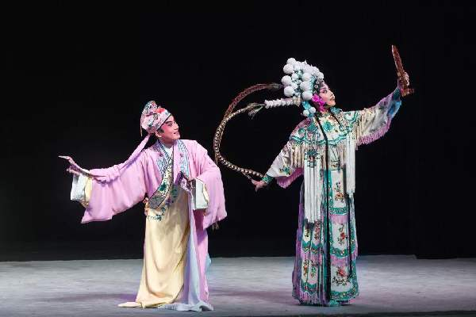
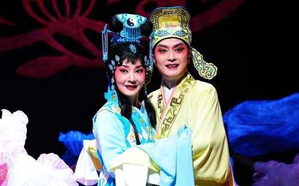

高腔是中国戏曲四大声腔之一。高腔原称为“弋阳腔”或“弋腔”，因为它起源于江西弋阳。它是明代弋阳腔与后来的青阳腔流变派生形成的诸声腔剧种。在几百年的流变过程中，弋阳腔各分支发生了很大的变化，它们与各地民间音乐有不同程度的结合，由此形成各地高腔不同的音乐风格。其特点是表演质朴、曲词通俗、唱腔高亢激越、一人唱而众人和，只用金鼓击节，没有管弦乐伴奏。高腔曲牌很多，不同剧目有规定的“套式”。初用长短句词格。剧目丰富，如《槐荫记》、《合珠记》、《白兔记》等。
高腔是川剧中最重要的一种声腔，是明末清初从外地传入四川。高腔传入四川以后，结合了四川方言、民间歌谣、劳动号子、发问说唱等形式，几经加工和提炼，逐步形成了具有地方特色的声腔音乐。
川剧高腔是曲牌体音乐，川剧高腔曲牌数量众多，形式复杂。它的结构基本上可以概括为：起腔、立柱、唱腔、扫尾。高腔剧目多、题材广、适应多种文词格式。高腔最主要的特点是没有乐器伴奏的干唱即所谓"一唱众和"的徒歌形式，它以帮打唱为一体。锣鼓的曲牌都是以这种方式组成的。有的曲牌帮腔多于唱腔，有的基本全部都是帮腔，有的曲牌只在首尾两句有帮腔，其具体形式是由戏决定的。
川剧高腔保留了南曲和北曲的优秀传统，它兼有高亢激越和婉转抒情的唱腔曲调。

